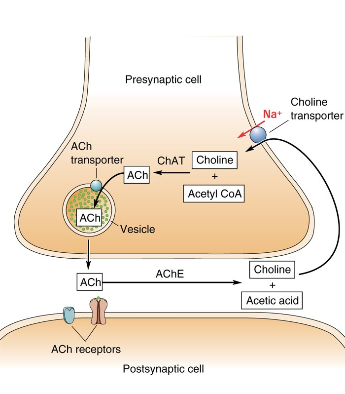
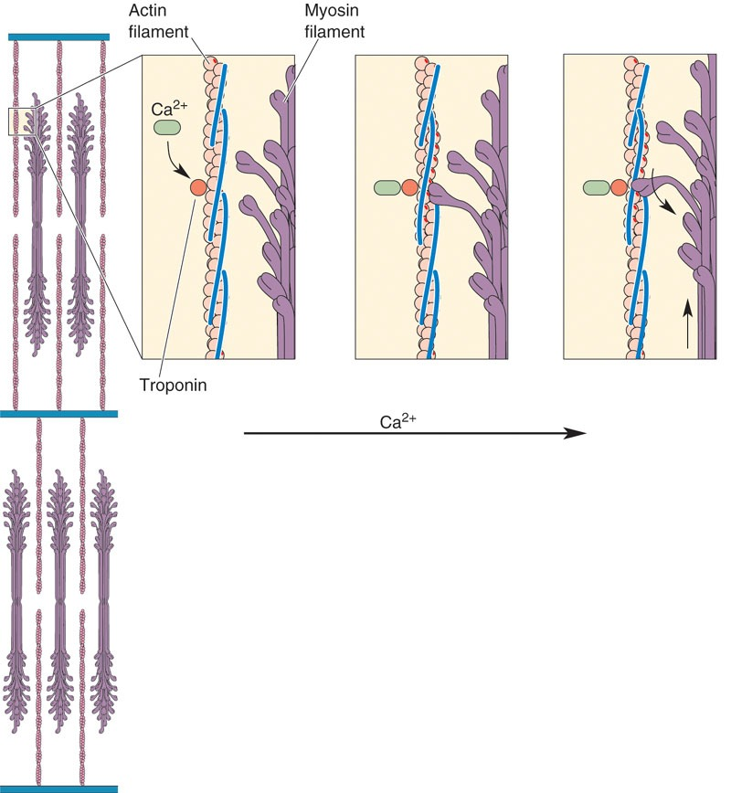

高中生物竞赛讲义 · 集训营
第十二章 动物体的生命活动
章节总纲 · 六、肌肉收缩的生理机制（竞赛深化）
📅 整理日期: 2026年7月4日
六、肌肉收缩的生理机制（竞赛深化）
兴奋-收缩偶联
三步：
①肌膜AP沿
T管
传向深处
②
三联管
信息传递
③终池Ca²⁺释放
Ca²⁺是耦联因子
：Ca²⁺与肌钙蛋白结合→原肌球蛋白位移→暴露结合位点→横桥结合、分解ATP、摆动→细肌丝向M线滑动
舒张时胞质Ca²⁺通过
钙泵
主动转运回肌浆网
三联管 = T管 + 2个终池
兴奋-收缩偶联的媒介是Ca²⁺。三联管（T管+2终池）是结构基础。注意舒张也需要ATP（钙泵主动转运），故ATP不足时肌肉无法舒张（挛缩）。

图：神经肌肉接头（来源：教师授课PPT）

图：肌丝滑行（来源：教师授课PPT）
三类肌肉的生理特性对比
特征
骨骼肌
心肌
平滑肌
横纹
有
有
无
细胞核
多核
1-2个（闰盘→功能合胞体）
单核
节律性
无
有
有（低）
Ca²⁺来源
100%肌浆网
90%内源+10%外源（钙触发钙释放CICR）
部分胞外
强直收缩
可发生完全强直
不可（有效不应期长）
—
AP去极化离子
Na⁺
快反应细胞Na⁺；慢反应细胞Ca²⁺；平台期Ca²⁺内流
Ca²⁺
心肌不可强直收缩（有效不应期长到舒张早期）。快反应细胞（心房/心室肌、浦肯野纤维）0期Na⁺内流，慢反应细胞（窦房结、房室结）0期Ca²⁺内流；平台期均依赖Ca²⁺内流。平滑肌AP去极化主要靠Ca²⁺内流（非Na⁺）。
肌梭与牵张反射
肌梭
：梭内肌受
γ运动神经元
支配，传入为
Ia类纤维
肌梭与梭外肌
并联
、梭内感受器与梭内肌
串联
牵张反射
：肌肉被牵拉→肌梭兴奋→Ia传入→脊髓α运动神经元→肌肉收缩
肌梭的传入是Ia类纤维，梭内肌受γ运动神经元支配（非γ传入）。肌梭与梭外肌并联、感受器与梭内肌串联——这种结构关系决定了牵张反射的机制，是联赛高频考点。
快缩纤维与慢缩纤维
快缩纤维（白肌）
：线粒体少、糖酵解供能、产乳酸、爆发力强
慢缩纤维（红肌）
：线粒体多、有氧氧化、耐力强
白肌（快缩、糖酵解、爆发力）vs红肌（慢缩、有氧、耐力）的对比是竞赛常考点。注意颜色由肌红蛋白含量决定。